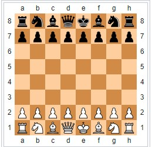

Chess is a board game for two players. It is sometimes called Western chess or international chess to distinguish it from related games, such as xiangqi (Chinese chess) and shogi (Japanese chess). The current form of the game emerged in Spain and the rest of Southern Europe during the second half of the 15th century after evolving from chaturanga, a similar but much older game of Indian origin. Today, chess is one of the world's most popular games, played by millions of people worldwide. White moves first, after which players alternate turns, moving one piece per turn, except for castling, when two pieces are moved. A piece is moved to either an unoccupied square or one occupied by an opponent's piece, which is captured and removed from play. With the sole exception of en passant, all pieces capture by moving to the square that the opponent's piece occupies. Moving is compulsory; a player may not skip a turn, even when having to move is detrimental.
Each piece has its own way of moving. In the diagrams, the dots mark the squares to which the piece can move if there are no intervening piece(s) of either color (except the knight, which leaps over any intervening pieces). All pieces except the pawn can capture an enemy piece if it is located on a square to which they would be able to move if the square was unoccupied. The squares on which pawns can capture enemy pieces are marked in the diagram with black crosses.
Chess is a board game for two players. It is sometimes called Western chess or international chess to distinguish it from related games, such as xiangqi (Chinese chess) and shogi (Japanese chess). The current form of the game emerged in Spain and the rest of Southern Europe during the second half of the 15th century after evolving from chaturanga, a similar but much older game of Indian origin. Today, chess is one of the world's most popular games, played by millions of people worldwide. White moves first, after which players alternate turns, moving one piece per turn, except for castling, when two pieces are moved. A piece is moved to either an unoccupied square or one occupied by an opponent's piece, which is captured and removed from play. With the sole exception of en passant, all pieces capture by moving to the square that the opponent's piece occupies. Moving is compulsory; a player may not skip a turn, even when having to move is detrimental.
Each piece has its own way of moving. In the diagrams, the dots mark the squares to which the piece can move if there are no intervening piece(s) of either color (except the knight, which leaps over any intervening pieces). All pieces except the pawn can capture an enemy piece if it is located on a square to which they would be able to move if the square was unoccupied. The squares on which pawns can capture enemy pieces are marked in the diagram with black crosses.
 Chess is an abstract strategy game and involves no hidden information. It is played on a chessboard with 64 squares arranged in an eight-by-eight grid. At the start, each player controls sixteen pieces: one king, one queen, two rooks, two bishops, two knights, and eight pawns. The player who moves first controls white pieces, and the other controls black pieces. The object of the game is to checkmate the opponent's king, whereby the king is under immediate attack (in "check") and there is no way for it to escape. There are also several ways a game can end in a draw. Chess pieces are divided into two different colored sets. While the sets may not be literally white and black (e.g. the light set may be a yellowish or off-white color, the dark set may be brown or red), they are always referred to as "white" and "black". The players of the sets are referred to as White and Black, respectively. Each set consists of 16 pieces: one king, one queen, two rooks, two bishops, two knights, and eight pawns. Chess sets come in a wide variety of styles; for competition, the Staunton pattern is preferred. The game is played on a square board of eight rows (called ranks) and eight columns (called files). By convention, the 64 squares alternate in color and are referred to as light and dark squares; common colors for chessboards are white and brown, or white and dark green. The pieces are set out as shown in the diagram and photo. Thus, on White's first rank, from left to right, the pieces are placed in the following order: rook, knight, bishop, queen, king, bishop, knight, rook. On the second rank is placed a row of eight pawns. Black's position mirrors White's, with an equivalent piece on the same file. The board is placed with a light square at the right-hand corner nearest to each player. The correct positions of the king and queen may be remembered by the phrase "queen on her own color" ─ i.e. the white queen begins on a light square and the black queen on a dark square. In competitive games, the piece colors are allocated to players by the organizers; in informal games, the colors are usually decided randomly, for example by a coin toss, or by one player concealing a white pawn in one hand and a black pawn in the other, and having the opponent choose.